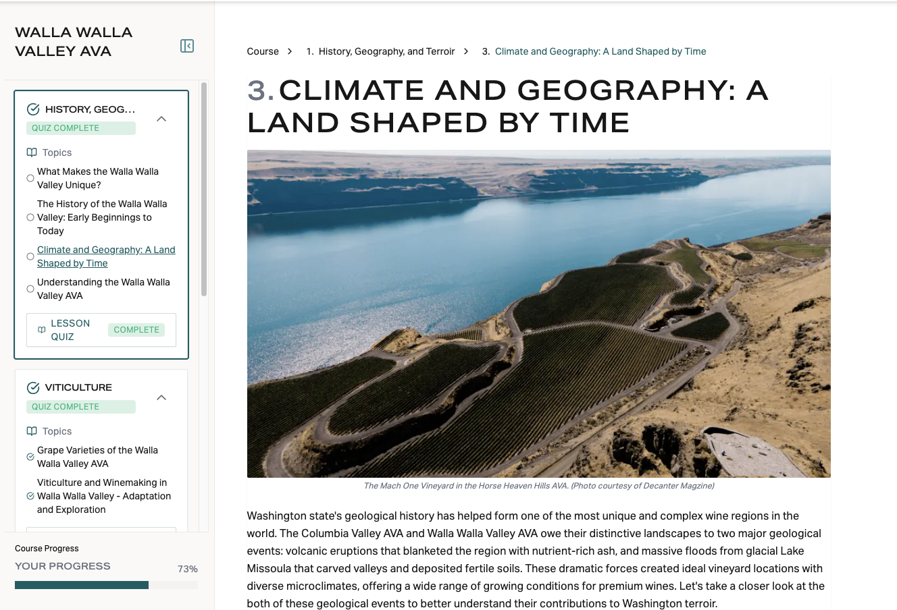
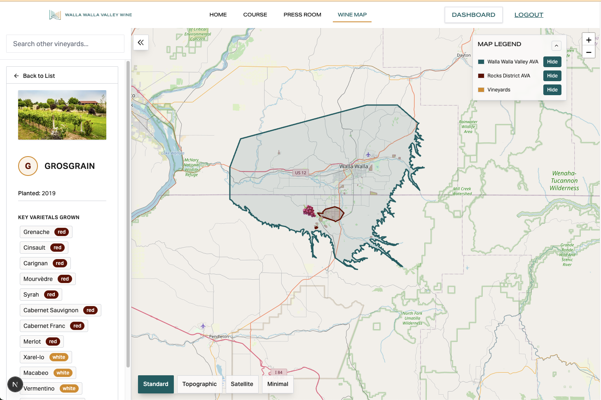

Platform Overview
Regional Wine Storytelling Platform
Interactive Education & Immersive Digital Experiences for Wine Regions

Built for Wine Regions
Custom digital platforms designed to integrate with your existing marketing infrastructure. We build tailored storytelling experiences that complement your current outreach, adapt to your brand guidelines, and connect with your analytics ecosystem.
Platform Capabilities
- Interactive AVA Maps: Clickable exploration of your region's AVAs with soil types, elevation, and microclimates
- Terroir & Geology Storytelling: Multimedia content connecting geology to wine character and regional identity
- Historical Narratives: Interactive timelines showcasing your region's winemaking heritage and evolution
- Varietal Profiles: Education on regional signature wines with tasting notes and food pairings
- Gamified Engagement: Quizzes, badges, and certification programs (e.g., "Regional Wine Explorer")
- Multi-Audience Design: Content crafted for wine consumers, trade professionals, and media
- Mobile Optimized: Seamless experiences across all devices for maximum reach

Interactive Regional Mapping
Explore AVAs, terroir, and regional wine styles

User Experience Dashboard
Personalized learning journeys and progress tracking